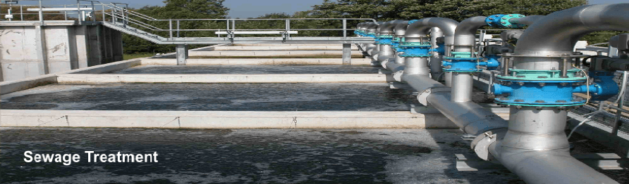
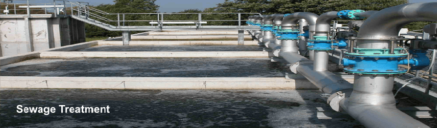

Ultra Filtration
Ultrafiltration (UF) is a variety of membrane filtration in which forces like pressure or concentration gradients leads to a separation through a semipermeable membrane. Suspended solids and solutes of high molecular weight are retained in the so-called retentate, while water and low molecular weight solutes pass through the membrane in the permeate.

This separation process is used in industry and research for purifying and concentrating macromolecular (103 - 106 Da) solutions, especially protein solutions.
Ultrafiltration is not fundamentally different from microfiltration, nanofiltration or membrane gas separation, except in terms of the size of the molecules it retains - it is defined by the Molecular Weight Cut Off (MWCO) of the membrane used. Ultrafiltration is applied in cross-flow or dead-end mode.
UF can be used for the removal of particulates and macromolecules from raw water to produce potable water. They have been used to either replace existing secondary (coagulation, flocculation, sedimentation) and tertiary filtration (sand filtration and chlorination) systems employed in water treatment plants or as standalone systems in isolated regions with growing populations. When treating water with high suspended solids, UF is often integrated into the process, utilising primary (screening, flotation, filtration) and some secondary treatments as pre-treatment stages.
UF processes are currently preferred over traditional treatment methods for the following reasons:
- No chemicals required (aside from cleaning)
- Constant product quality regardless of feed quality
- Compact plant size
- Capable of exceeding regulatory standards of water quality, achieving 90-100% pathogen removal.
UF processes are currently limited by the high cost incurred due to membrane fouling and replacement. Additional pretreatment of feed water is required to prevent excessive damage to the membrane units.
In many cases UF is used for pre filtration in reverse osmosis plants to protect the RO.